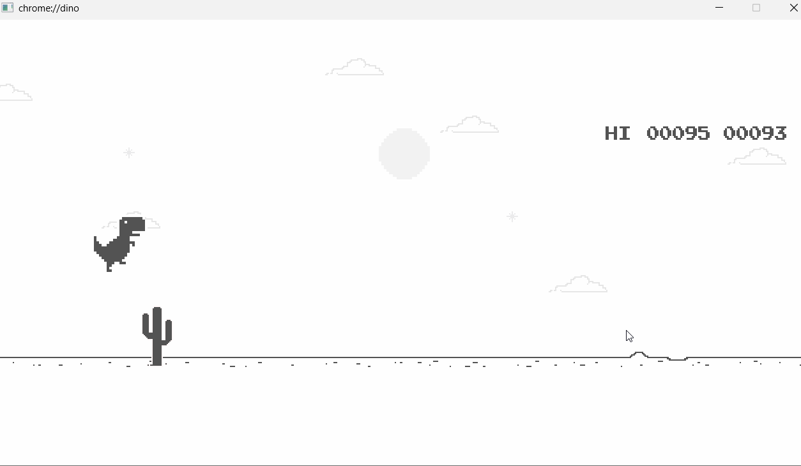

# Game Balancing + Level Design <hr> <br> Xinxing Wu
# Outline [<p class="hover-underline-animation">Game Balancing</p>](#/ch1) [<p class="hover-underline-animation">Level Design Principles + Layouts</p>](#/ch2) [<p class="hover-underline-animation">Mini workshop</p>](#/ch3) [<p class="hover-underline-animation">Lab</p>](#/ch4)
## Goal <div id="shadebox-neon" class="shadebox neon"> By the end, you can: - Explain what “balanced” means (PvP and PvE) - Spot and fix a *dominant strategy* - Use **costs + shadow costs** to balance choices - Control **positive feedback** (runaway leaders) - Build a simple difficulty curve (no “unfair spikes”) - Sketch a level layout (linear / parallel / hub-spoke / network / ring) - Design a tutorial level that teaches by playing </div>
<p class="definition-rainbow-title">Games and Play</p>
<div class="definition-com-container"> <div class="definition-com-title">Warm-Up</div> <div class="definition-com-shadebox"> Name a game you’ve played: - What felt “unfair”? - What felt “too easy” or “too hard”? - What felt “boring” because you always used the same option? </div> </div> <div class="definition-pro-Y-container"> <div class="definition-pro-Y-title">What is “Game Balance”?</div> <div class="definition-pro-Y-shadebox"> <div style="width: 800px;"></div> Balance is not “everything equal.” Balance means: - Multiple choices are viable - Skill matters more than luck (when appropriate) - The game remains interesting over time </div> </div> <div class="definition-pro-Y-container"> <div class="definition-pro-Y-title">Balanced Game</div> <div class="definition-pro-Y-shadebox"> A balanced game is one where: - players can win in **different ways** - **better play** tends to win more often - choices are **meaningful** (trade-offs) </div> </div> <div class="definition-pro-Y-container"> <div class="definition-pro-Y-title">Practice</div> <div class="definition-pro-Y-shadebox"> A choice is meaningful if: - Each option has **benefits** and **costs** - The “best” option depends on the situation - You can explain *when* you’d pick each option <button type="button" class="reveal-btn" data-answer="answer-e1">Show Answer</button> <div id="answer-e1" class="answer-box"> <b>Answer:</b> Option A is always best? Really? </div> </div> </div> <div class="definition-pro-Y-container"> <div class="definition-pro-Y-title">Example: Not Balanced</div> <div class="definition-pro-Y-shadebox"> You have two weapons: - Sword: damage 10, speed fast - Axe: damage 8, speed slow If sword is better in every way → axe becomes useless. </div> </div> <div class="definition-pro-Y-container"> <div class="definition-pro-Y-title">Example: Balanced (Trade-off)</div> <div class="definition-pro-Y-shadebox"> <div style="width: 800px;"></div> - Sword: damage 10, speed fast, **short range** - Spear: damage 8, speed medium, **long range** Now each wins in different situations: - spear safer vs dangerous enemy - sword better in tight spaces / fast reactions </div> </div> <div class="definition-pro-Y-container"> <div class="definition-pro-Y-title">Dominant Strategy</div> <div class="definition-pro-Y-shadebox"> A **dominant strategy** is a choice that is best (or nearly best) in almost all situations. If a dominant strategy exists: - players stop experimenting - the game becomes repetitive - skill expression can shrink </div> </div> <div class="definition-pro-Y-container"> <div class="definition-pro-Y-title">How Do Dominant Strategies Happen?</div> <div class="definition-pro-Y-shadebox"> <div style="width: 800px;"></div> Common causes: - One option has too much reward for too little cost - Costs exist, but they’re too small to matter - The game never creates situations where other options shine </div> </div> <div class="definition-pro-Y-container"> <div class="definition-pro-Y-title">Fixing Dominant Strategies (Overview)</div> <div class="definition-pro-Y-shadebox"> <div style="width: 800px;"></div> You can balance by: - Adding **direct costs** (price, cooldown, limited ammo) - Adding **shadow costs** (risk, difficulty, positioning needs) - Making options **intransitive** (rock-paper-scissors style) - Adjusting **feedback loops** so winning doesn’t snowball too hard </div> </div> <div class="definition-pro-Y-container"> <div class="definition-pro-Y-title">Transitive Relationships</div> <div class="definition-pro-Y-shadebox"> <div style="width: 800px;"></div> A transitive relationship is a straight “better/worse” ladder: If A > B and B > C, then A > C. Example: bronze sword < iron sword < steel sword This is okay *only if* costs scale correctly. </div> </div> <div class="definition-pro-Y-container"> <div class="definition-pro-Y-title">Direct Costs</div> <div class="definition-pro-Y-shadebox"> Add a direct cost: - Gold cost - Ammo cost - Cooldown time - Stamina cost Example: - Mega spell does big damage, but costs 50 mana. </div> </div> <div class="definition-pro-Y-container"> <div class="definition-pro-Y-title">Shadow Costs</div> <div class="definition-pro-Y-shadebox"> Shadow costs are “hidden” costs: - Requires better aim - Puts you in danger - Slower movement while using it - Needs rare resources (hard to maintain) - Makes you predictable (easy to counter) Shadow costs keep options interesting without just “raising price.” </div> </div> <div class="definition-pro-Y-container"> <div class="definition-pro-Y-title">Example</div> <div class="definition-pro-Y-shadebox"> Two guns both do 10 damage: - Gun A: easy to aim, stable - Gun B: same damage, but strong recoil (harder to hit) B can be “better” for skilled players, but not always. </div> </div> <div class="definition-pro-Y-container"> <div class="definition-pro-Y-title">Are Your Costs Real?</div> <div class="definition-pro-Y-shadebox"> <div style="width: 800px;"></div> Ask: - Does the cost change the player’s decision? - Or do players ignore it because it’s too small? If players ignore cost → it’s not balancing anything. </div> </div> <div class="definition-pro-Y-container"> <div class="definition-pro-Y-title">Intransitive Relationships (Rock–Paper–Scissors)</div> <div class="definition-pro-Y-shadebox"> <div style="width: 900px;"></div> Intransitive means: - A beats B - B beats C - C beats A This prevents “one best option” and supports variety. </div> </div> <div class="definition-pro-Y-container"> <div class="definition-pro-Y-title">RPS Example</div> <div class="definition-pro-Y-shadebox"> <div style="width: 800px;"></div> Enemy types: - Shield Knight (blocks arrows) - Archer (stays far away) - Fast Rogue (dodges slow attacks) Player tools: - Heavy hammer breaks shields - Bow beats slow archer - Trap catches fast rogue No single tool dominates everywhere. </div> </div> <div class="definition-pro-Y-container"> <div class="definition-pro-Y-title">Make Intransitive Relationships Feel Natural</div> <div class="definition-pro-Y-shadebox"> <div style="width: 800px;"></div> Avoid “random weird rules.” Use logic players understand: - shields block arrows - fire burns plants - ice slows water creatures This helps learning and fairness. </div> </div> <div class="definition-pro-Y-container"> <div class="definition-pro-Y-title">Incorporating Chance (Randomness) Carefully</div> <div class="definition-pro-Y-shadebox"> <div style="width: 900px;"></div> Chance can add: - excitement - variety - replayability But too much chance can reduce fairness/skill. </div> </div> <div class="definition-pro-Y-container"> <div class="definition-pro-Y-title">Note</div> <div class="definition-pro-Y-shadebox"> Use chance to create *moments*, not to decide everything. Good: - small crit chance (5–10%) - loot variance within a range - slightly randomized enemy patterns Risky: - huge coin-flip outcomes that decide winners </div> </div> <div class="definition-pro-Y-container"> <div class="definition-pro-Y-title">Expected Value Example</div> <div class="definition-pro-Y-shadebox"> Attack has: - 50% hit chance - 10 damage on hit Expected damage per attempt: = 0.5 × 10 = 5 If you boost hit chance to 80%: = 0.8 × 10 = 8 (big balance change!) </div> </div> <div class="definition-pro-Y-container"> <div class="definition-pro-Y-title">PvP Fairness (Player vs Player)</div> <div class="definition-pro-Y-shadebox"> In PvP, “fair” usually means: - both players have a reasonable chance to win - the game rewards skill - small advantages don’t become unstoppable </div> </div> <div class="definition-pro-Y-container"> <div class="definition-pro-Y-title">PvE Fairness (Player vs Game)</div> <div class="definition-pro-Y-shadebox"> In PvE, “fair” often means: - rules feel consistent - danger is signaled (no cheap surprise deaths) - failure teaches something - player believes success is achievable </div> </div> <div class="definition-pro-Y-container"> <div class="definition-pro-Y-title">Difficulty: Absolute vs Perceived</div> <div class="definition-pro-Y-shadebox"> **Absolute difficulty:** how hard the challenge truly is **Perceived difficulty:** how hard it *feels* to players Two players can feel different difficulty for the same level. </div> </div> <div class="definition-pro-Y-container"> <div class="definition-pro-Y-title">A “Perceived Difficulty” Model</div> <div class="definition-pro-Y-shadebox"> <div style="width: 800px;"></div> Perceived Difficulty ≈ Absolute Difficulty − (Power Provided + In-Game Experience) Meaning: - if you give tools/resources and players learn patterns, difficulty *feels* lower even if the level is identical. </div> </div> <div class="definition-pro-Y-container"> <div class="definition-pro-Y-title">Sawtooth Difficulty (Why It Works)</div> <div class="definition-pro-Y-shadebox"> <div style="width: 800px;"></div> Many good games feel like: - challenge spike - reward/rest - challenge spike - reward/rest This prevents exhaustion and supports learning. </div> </div> <div class="definition-pro-Y-container"> <div class="definition-pro-Y-title">Positive Feedback (Snowballing)</div> <div class="definition-pro-Y-shadebox"> <div style="width: 800px;"></div> Positive feedback is when: - success gives more power, - which makes more success easier, - which gives even more power… Examples: - the rich get richer (economy) - leader gets strongest weapons first - winning gives more resources than losing </div> </div> <div class="definition-pro-Y-container"> <div class="definition-pro-Y-title">Why Positive Feedback Exists (It’s Not “Bad”)</div> <div class="definition-pro-Y-shadebox"> <div style="width: 800px;"></div> Positive feedback can: - create excitement - make progress feel rewarding - shorten the endgame (so it doesn’t drag) The goal is not “remove it,” but **control it**. </div> </div> <div class="definition-pro-Y-container"> <div class="definition-pro-Y-title">Controlling Positive Feedback (Toolbox)</div> <div class="definition-pro-Y-shadebox"> Ways to reduce runaway leaders: - Don’t give too much power too fast - Put **limits/caps** on power - Add **costs** to using power - Raise the difficulty (globally) as power rises - Add rules that allow cooperation/collusion (sometimes) - Make victory depend on something other than “who is richest” - Add chance that reduces the size of rewards (Choose what fits your genre.) </div> </div> <div class="definition-pro-Y-container"> <div class="definition-pro-Y-title">Catch-Up Mechanic Example</div> <div class="definition-pro-Y-shadebox"> Kart racing classic: - leaders get smaller boosts - trailing players get better boosts Goal: - keep race exciting without making skill irrelevant. </div> </div> <div class="definition-pro-Y-container"> <div class="definition-pro-Y-title">Stagnation Problem</div> <div class="definition-pro-Y-shadebox"> Stagnation happens when: - players get stuck - nothing changes - no progress path is visible Fixes include: - hints (gradual) - alternate routes - small resource drip - “fail forward” progress </div> </div> <div class="definition-pro-Y-container"> <div class="definition-pro-Y-title">Trivialities Problem</div> <div class="definition-pro-Y-shadebox"> Trivialities are: - decisions that don’t matter - busywork micromanagement Players get bored if they must do “tiny chores” repeatedly. </div> </div> <div class="definition-pro-Y-container"> <div class="definition-pro-Y-title">Example: Triviality vs Meaningful</div> <div class="definition-pro-Y-shadebox"> <div style="width: 800px;"></div> Trivial: - click 200 times to collect 1 coin each time Meaningful: - choose between: - safe route (small coins) - risky route (big treasure) </div> </div> <div class="definition-pro-Y-container"> <div class="definition-pro-Y-title">Tuning Workflow (How to Balance Efficiently)</div> <div class="definition-pro-Y-shadebox"> <div style="width: 900px;"></div> Practical tuning habits: - Tune **one parameter at a time** - Make big adjustments early (don’t waste time on tiny tweaks) - Keep records of changes (what changed, what happened) - Use playtest data (not just your own feelings) </div> </div> <div class="definition-pro-Y-container"> <div class="definition-pro-Y-title">Pseudo-Random Helps Fairness</div> <div class="definition-pro-Y-shadebox"> <div style="width: 800px;"></div> If you use randomness: - pure random can “streak” (bad luck chains) - pseudo-random can reduce frustration Example: - “bad luck protection” in loot drops </div> </div> <div class="definition-pro-Y-container"> <div class="definition-pro-Y-title">Quick Knowledge Check</div> <div class="definition-pro-Y-shadebox"> - What’s a dominant strategy? - Give one shadow cost example. - Why is positive feedback useful, and why is it risky? </div> </div>
<p class="definition-rainbow-title">Level Design Principles + Layouts</p>
<div class="definition-com-container"> <div class="definition-com-title">What is Level Design?</div> <div class="definition-com-shadebox"> Level design is the craft of building the play space: - challenges - pacing - learning curve - rewards - mood You’re shaping the *player’s experience moment by moment*. </div> </div> <div class="definition-pro-Y-container"> <div class="definition-pro-Y-title">Universal Level Design Principles</div> <div class="definition-pro-Y-shadebox"> <div style="width: 800px;"></div> Good levels often: - teach early (tutorial levels) - vary pace - refill resources after costly challenges - avoid “nonsense” that breaks logic - clearly show short-term goals - make risks/rewards understandable - reward skill and intelligence - focus attention on what matters </div> </div> <div class="definition-pro-Y-container"> <div class="definition-pro-Y-title">Avoid Conceptual Non Sequiturs</div> <div class="definition-pro-Y-shadebox"> <div style="width: 800px;"></div> Don’t punish players for thinking logically. If your game is realistic-ish: - don’t hide medical kits in exploding oil drums - don’t rely on “cartoon logic” without warning </div> </div> <div class="definition-pro-Y-container"> <div class="definition-pro-Y-title">Clearly Inform Short-Term Goals</div> <div class="definition-pro-Y-shadebox"> <div style="width: 800px;"></div> Players shouldn’t wonder: “What do I do next?” It’s okay to hide long-term goals sometimes, but short-term direction should be visible. </div> </div> <div class="definition-pro-Y-container"> <div class="definition-pro-Y-title">Be Clear About Risk and Consequences</div> <div class="definition-pro-Y-shadebox"> <div style="width: 800px;"></div> Players should be able to make a reasonable guess: - “If I pull this lever, what likely happens?” - “If I take this path, what might I gain/lose?” Avoid “learn by dying” as the only teacher. </div> </div> <div class="definition-pro-Y-container"> <div class="definition-pro-Y-title">Reward the Player (More Than Punish)</div> <div class="definition-pro-Y-shadebox"> <div style="width: 800px;"></div> Reward: - skill - imagination - intelligence - dedication Rewards can be: - shortcuts - secrets - powerups - story moments - simple praise/feedback </div> </div> <div class="definition-pro-Y-container"> <div class="definition-pro-Y-title">The Foreground Takes Precedence</div> <div class="definition-pro-Y-shadebox"> <div style="width: 800px;"></div> Make sure: - important objects stand out - the player’s attention goes to what matters - background doesn’t create confusion Beginner tip: “Can I see what I’m supposed to notice?” </div> </div> <div class="definition-pro-Y-container"> <div class="definition-pro-Y-title">Levels Should Be Winnable</div> <div class="definition-pro-Y-shadebox"> <div style="width: 800px;"></div> Single-player design goal: - the artificial opponent should fight well, but the player should be able to win eventually. Unbeatable levels are broken levels. </div> </div> <div class="definition-pro-Y-container"> <div class="definition-pro-Y-title">Difficulty Settings</div> <div class="definition-pro-Y-shadebox"> <div style="width: 800px;"></div> If possible: - easy / normal / hard - adjust numbers and resources to fit audience Beginner tip: Start with “normal,” then scale. </div> </div> <div class="definition-pro-Y-container"> <div class="definition-pro-Y-title">Tutorial Levels</div> <div class="definition-pro-Y-shadebox"> <div style="width: 800px;"></div> Modern games teach by playing. Tutorial levels: - show controls - show UI - show key actions - build confidence </div> </div> <div class="definition-pro-Y-container"> <div class="definition-pro-Y-title">Explicit vs Implicit Tutorials</div> <div class="definition-pro-Y-shadebox"> <div style="width: 800px;"></div> **Explicit tutorial:** separate, optional training mode **Implicit tutorial:** early levels teach quietly during real play Important: - tutorials must be skippable (experienced players hate forced tutorials) </div> </div> <div class="definition-pro-Y-container"> <div class="definition-pro-Y-title">Tutorial Design Principles</div> <div class="definition-pro-Y-shadebox"> <div style="width: 800px;"></div> - Introduce features in a clear sequence - Don’t unlock everything at once - Highlight UI elements when explaining - Allow retries with no punishment - Disable “real-game penalties” during tutorial </div> </div> <div class="definition-pro-Y-container"> <div class="definition-pro-Y-title">Level Layouts (Why Layout Matters)</div> <div class="definition-pro-Y-shadebox"> <div style="width: 800px;"></div> Layout changes: - exploration - story order - tension - player freedom - where fights happen </div> </div> <div class="definition-pro-Y-container"> <div class="definition-pro-Y-title">Open Layout</div> <div class="definition-pro-Y-shadebox"> - like outdoors - lots of freedom - used in war games / exploration Risk: - harder to control story sequence </div> </div> <div class="definition-pro-Y-container"> <div class="definition-pro-Y-title">Linear Layout</div> <div class="definition-pro-Y-shadebox"> - fixed sequence - “on rails” - easy to control story pacing Common mistake: - locking players out of essential items. </div> </div> <div class="definition-pro-Y-container"> <div class="definition-pro-Y-title">Parallel Layout</div> <div class="definition-pro-Y-shadebox"> - multiple paths toward the same destination - often includes: - risky path = bigger reward - safe path = smaller reward - story path = narrative reward Don’t hide shortcuts with no clues (trial-and-error feels bad). </div> </div> <div class="definition-pro-Y-container"> <div class="definition-pro-Y-title">Ring Layout</div> <div class="definition-pro-Y-shadebox"> - loops back to start - common in racing - shortcuts should be harder (to be fair) </div> </div> <div class="definition-pro-Y-container"> <div class="definition-pro-Y-title">Network Layout</div> <div class="definition-pro-Y-shadebox"> - many interconnections - strong exploration - harder to enforce story sequence Great for: - arenas / deathmatch (few choke points) </div> </div> <div class="definition-pro-Y-container"> <div class="definition-pro-Y-title">Hub-and-Spoke Layout</div> <div class="definition-pro-Y-shadebox"> <div style="width: 800px;"></div> - safe hub + multiple spokes - player can choose which spoke to attempt - can lock spokes to control difficulty order - classic “homeworld” feel </div> </div> <div class="definition-pro-Y-container"> <div class="definition-pro-Y-title">Pacing: Speed of Experience</div> <div class="definition-pro-Y-shadebox"> <div style="width: 800px;"></div> Pacing = how intense things feel over time. Too fast for too long = fatigue Too slow too long = boredom Goal: - variation (rest → intensity → rest) </div> </div> <div class="definition-pro-Y-container"> <div class="definition-pro-Y-title">Overall Pacing Often Rises Toward the End</div> <div class="definition-pro-Y-shadebox"> <div style="width: 800px;"></div> Many games: - maintain steady pacing OR increase toward the end - often end with a boss (big final challenge) Avoid making levels steadily easier as they progress. </div> </div> <div class="definition-pro-Y-container"> <div class="definition-pro-Y-title">Level Design Process</div> <div class="definition-pro-Y-shadebox"> <div style="width: 800px;"></div> A common professional workflow: - plan - prototype - review - refine - lock the level - handoff to art/audio/code - integrate content - bug fix - user test and tune It’s iterative: you improve through repeated testing. </div> </div> <div class="definition-pro-Y-container"> <div class="definition-pro-Y-title">Scope Carefully (Pitfall)</div> <div class="definition-pro-Y-shadebox"> <div style="width: 800px;"></div> Most common beginner error: - designing too big Scope includes: - size of map - number of props - NPCs - special events Make lists early so reality hits early (not at the end). </div> </div> <div class="definition-pro-Y-container"> <div class="definition-pro-Y-title">“Don’t Show Everything at Once”</div> <div class="definition-pro-Y-shadebox"> <div style="width: 800px;"></div> If players see all mechanics in level 1: - later levels feel repetitive Introduce twists gradually: - new enemy - new movement tool - new environment - new risk/reward </div> </div> <div class="definition-pro-Y-container"> <div class="definition-pro-Y-title">Never Lose Sight of Audience</div> <div class="definition-pro-Y-shadebox"> <div style="width: 800px;"></div> You are not the player. Your audience may be: - younger - older - new to games - different preferences Design for them, not for your own habits. </div> </div>
<p class="definition-rainbow-title">Mini workshop</p>
<div class="definition-com-container"> <div class="definition-com-title">Workshop</div> <div class="definition-com-shadebox"> Pick one: - Draw a **hub-and-spoke** map with 3 spokes and a hub. - Design a **tutorial sequence** that teaches: - move → interact → basic combat → reward - List 3 options in your game and add shadow costs so none dominates. </div> </div> <div class="definition-pro-Y-container"> <div class="definition-pro-Y-title">Checklist</div> <div class="definition-pro-Y-shadebox"> <div style="width: 800px;"></div> When your game feels “off,” ask: - Is there a dominant strategy? - Are costs/shadow costs real? - Is positive feedback snowballing too hard? - Are players stuck (stagnation)? - Are they doing chores (trivialities)? - Does the level clearly communicate goals? - Is pacing varied and recoverable? </div> </div>
<p class="definition-rainbow-title">Lab</p>
<div class="definition-com-container"> <div class="definition-com-title">Materials</div> <div class="definition-com-shadebox"> <a href="./files/Chapter 15. Game Balancing.pdf" target="_blank">Chapter 15. Game Balancing</a> <a href="./files/Chapter 16. General Principles of Level.pdf" target="_blank">Chapter 16. General Principles of Level</a> </div> </div> <div class="definition-pro-Y-container"> <div class="definition-pro-Y-title">SFML balance lab</div> <div class="definition-pro-Y-shadebox"> Build a small top-down arena game where the player survives waves and learns balancing concepts by playing: </div> </div> <div class="definition-pro-Y-container"> <div class="definition-pro-Y-title">SFML balance lab</div> <div class="definition-pro-Y-shadebox"> Required features - Three tools (choices must be meaningful) - Sword: melee, unlimited use - Bow: ranged, limited arrows (direct cost) - Bomb: AOE, cooldown and can hurt the player (shadow cost) - Three enemy types (create an intransitive relationship) - Slime: slow; if killed by sword, it splits into smaller slimes (shadow cost for sword) - Bat: fast; hard to hit with bombs (bomb timing cost) - Shield: reduces arrow damage heavily (bow not always best) </div> </div> <div class="definition-pro-Y-container"> <div class="definition-pro-Y-title">SFML balance lab</div> <div class="definition-pro-Y-shadebox"> Required features (cont.) - Sawtooth pacing - combat wave → short rest → combat wave → rest … - during rest, spawn a heal pickup and refill some arrows - Positive feedback control - killing enemies gives coins - coins buy upgrades (damage/health), BUT upgrades must not snowball into “unstoppable” - implement caps and/or diminishing returns </div> </div> <div class="definition-pro-Y-container"> <div class="definition-pro-Y-title">SFML balance lab</div> <div class="definition-pro-Y-shadebox"> Required features (cont.) - Short-term goals are clear - HUD shows weapon, HP, coins, wave state, and simple controls </div> </div> <div class="definition-pro-Y-container"> <div class="definition-pro-Y-title">SFML balance lab - Reference Answer</div> <div class="definition-pro-Y-shadebox"> Meaningful choices (no dominant strategy) - Bow is strong at distance but has ammo (direct cost) and does poor damage to Shield enemies. - Bomb is powerful AOE but has cooldown (direct cost) and self-damage risk (shadow cost). - Sword is reliable but against Slimes it triggers splitting (shadow cost) → sword is not always best. </div> </div> <div class="definition-pro-Y-container"> <div class="definition-pro-Y-title">SFML balance lab - Reference Answer</div> <div class="definition-pro-Y-shadebox"> Intransitive relationships (A beats B beats C style) - Bow beats Bat (fast enemy is safer to hit at range) - Shield beats Bow (arrows weak vs shield) - Bomb beats Shield (AOE cracks tough enemy) - Sword vs Slime is “situational”: sword can backfire by splitting slimes, so bombs/range can be better. </div> </div> <div class="definition-pro-Y-container"> <div class="definition-pro-Y-title">SFML balance lab - Reference Answer</div> <div class="definition-pro-Y-shadebox"> Positive feedback is controlled - Upgrades have caps and increasing costs, so winning doesn’t turn into guaranteed winning. Sawtooth pacing is implemented - Each wave is a spike, rest is recovery (heal + partial arrow refill). </div> </div> <div class="definition-pro-Y-container"> <div class="definition-pro-Y-title">Answer</div> <div class="definition-pro-Y-shadebox"> ``` // Project 1: SFML Balance Lab (SFML 3.x - NO external font file) // HUD is shown in the WINDOW TITLE (OS default font), so no arial.ttf needed. // // Build (Linux/macOS with pkg-config): // g++ -std=c++17 main.cpp -o BalanceLab `pkg-config --cflags --libs sfml-graphics sfml-window sfml-system` // // Windows (MinGW example): // g++ -std=c++17 main.cpp -o BalanceLab -IC:\SFML\include -LC:\SFML\lib -lsfml-graphics -lsfml-window -lsfml-system #include <SFML/Graphics.hpp> #include <SFML/System.hpp> #include <SFML/Window.hpp> #include <cmath> #include <vector> #include <string> #include <sstream> #include <iostream> #include <algorithm> #include <optional> #include <cstdlib> #include <ctime> static float clampf(float x, float a, float b) { if (x < a) return a; if (x > b) return b; return x; } static float length(sf::Vector2f v) { return std::sqrt(v.x * v.x + v.y * v.y); } static sf::Vector2f normalize(sf::Vector2f v) { float L = length(v); if (L <= 0.00001f) return sf::Vector2f(0.f, 0.f); return sf::Vector2f(v.x / L, v.y / L); } static float dist(sf::Vector2f a, sf::Vector2f b) { return length(a - b); } static bool circleCircle(sf::Vector2f a, float ra, sf::Vector2f b, float rb) { float d = dist(a, b); return d <= (ra + rb); } // -------------------- Game Tuning (beginner-friendly "balancing knobs") -------------------- struct BalanceConfig { // Player float playerSpeed = 220.f; float playerRadius = 16.f; int playerMaxHP = 100; // Sword float swordRange = 40.f; int swordDamage = 20; float swordCooldown = 0.18f; // Bow int bowDamage = 16; float bowBulletSpeed = 520.f; float bowCooldown = 0.22f; int bowMaxArrows = 25; // Bomb int bombDamage = 45; float bombThrowSpeed = 380.f; float bombFuse = 0.9f; float bombExplosionRadius = 90.f; float bombCooldown = 1.2f; int bombSelfDamage = 15; // shadow cost: using bomb too close hurts you // Enemies float slimeRadius = 18.f; int slimeHP = 35; float slimeSpeed = 85.f; float batRadius = 12.f; int batHP = 22; float batSpeed = 160.f; float shieldRadius = 20.f; int shieldHP = 60; float shieldSpeed = 70.f; float shieldArrowDamageMultiplier = 0.35f; // makes bow not dominant // Waves & pacing float restDuration = 4.0f; float combatDurationMin = 10.0f; int baseEnemiesPerWave = 6; int enemiesPerWaveGrowth = 2; // Economy (positive feedback control) int coinPerKill = 2; // Upgrade caps int maxDamageUpgrades = 5; int maxHPUpgrades = 3; // Upgrade costs int baseDamageUpgradeCost = 10; int baseHPUpgradeCost = 14; }; enum class WeaponType { Sword = 0, Bow = 1, Bomb = 2 }; enum class EnemyType { Slime = 0, Bat = 1, Shield = 2 }; struct Bullet { sf::Vector2f pos; sf::Vector2f vel; float r = 4.f; int dmg = 10; bool alive = true; }; struct Bomb { sf::Vector2f pos; sf::Vector2f vel; float timer = 1.f; float r = 7.f; bool alive = true; }; struct Enemy { EnemyType type = EnemyType::Slime; sf::Vector2f pos; sf::Vector2f vel; float r = 16.f; int hp = 30; bool alive = true; bool smallSlime = false; // slime split behavior }; struct Pickup { sf::Vector2f pos; float r = 10.f; bool alive = true; int healAmount = 25; }; struct Player { sf::Vector2f pos; float r = 16.f; int hp = 100; int maxHP = 100; WeaponType weapon = WeaponType::Sword; // resources int arrows = 20; // cooldown timers float swordCD = 0.f; float bowCD = 0.f; float bombCD = 0.f; // upgrades int damageUpgrades = 0; int hpUpgrades = 0; }; static int scaledDamage(int base, int dmgUpgrades) { float mul = 1.0f + 0.12f * dmgUpgrades; mul = 1.0f + (mul - 1.0f) * (1.0f - 0.06f * std::max(0, dmgUpgrades - 2)); if (mul < 1.0f) mul = 1.0f; return (int)std::round(base * mul); } static int damageUpgradeCost(const BalanceConfig& cfg, int currentLevel) { return cfg.baseDamageUpgradeCost + currentLevel * 8; } static int hpUpgradeCost(const BalanceConfig& cfg, int currentLevel) { return cfg.baseHPUpgradeCost + currentLevel * 10; } struct GameState { BalanceConfig cfg; Player player; std::vector<Bullet> bullets; std::vector<Bomb> bombs; std::vector<Enemy> enemies; Pickup healPickup; int coins = 0; int wave = 1; bool inRest = true; float restTimer = 0.f; }; static sf::Vector2f randomSpawnEdge(const sf::RenderWindow& win) { float w = (float)win.getSize().x; float h = (float)win.getSize().y; int side = std::rand() % 4; if (side == 0) return sf::Vector2f(-20.f, (float)(std::rand() % (int)h)); if (side == 1) return sf::Vector2f(w + 20.f, (float)(std::rand() % (int)h)); if (side == 2) return sf::Vector2f((float)(std::rand() % (int)w), -20.f); return sf::Vector2f((float)(std::rand() % (int)w), h + 20.f); } static void spawnWave(GameState& gs, const sf::RenderWindow& win) { gs.enemies.clear(); gs.bullets.clear(); gs.bombs.clear(); int count = gs.cfg.baseEnemiesPerWave + (gs.wave - 1) * gs.cfg.enemiesPerWaveGrowth; for (int i = 0; i < count; i++) { Enemy e; int roll = std::rand() % 100; if (gs.wave <= 2) { e.type = (roll < 70) ? EnemyType::Slime : EnemyType::Bat; } else if (gs.wave <= 4) { e.type = (roll < 45) ? EnemyType::Slime : (roll < 80 ? EnemyType::Bat : EnemyType::Shield); } else { e.type = (roll < 35) ? EnemyType::Slime : (roll < 70 ? EnemyType::Bat : EnemyType::Shield); } e.pos = randomSpawnEdge(win); if (e.type == EnemyType::Slime) { e.r = gs.cfg.slimeRadius; e.hp = gs.cfg.slimeHP; e.smallSlime = false; } else if (e.type == EnemyType::Bat) { e.r = gs.cfg.batRadius; e.hp = gs.cfg.batHP; } else { e.r = gs.cfg.shieldRadius; e.hp = gs.cfg.shieldHP; } gs.enemies.push_back(e); } } static void beginRest(GameState& gs, const sf::RenderWindow& win) { gs.inRest = true; gs.restTimer = gs.cfg.restDuration; gs.healPickup.alive = true; gs.healPickup.healAmount = 25 + (gs.wave / 2) * 5; gs.healPickup.pos = sf::Vector2f((float)(win.getSize().x / 2), (float)(win.getSize().y / 2)); gs.player.arrows = std::min(gs.cfg.bowMaxArrows, gs.player.arrows + 8); } static void beginCombat(GameState& gs, const sf::RenderWindow& win) { gs.inRest = false; spawnWave(gs, win); } static std::string weaponName(WeaponType w) { if (w == WeaponType::Sword) return "Sword"; if (w == WeaponType::Bow) return "Bow"; return "Bomb"; } static sf::Vector2f getMoveDir() { sf::Vector2f dir(0.f, 0.f); if (sf::Keyboard::isKeyPressed(sf::Keyboard::Key::W)) dir.y -= 1.f; if (sf::Keyboard::isKeyPressed(sf::Keyboard::Key::S)) dir.y += 1.f; if (sf::Keyboard::isKeyPressed(sf::Keyboard::Key::A)) dir.x -= 1.f; if (sf::Keyboard::isKeyPressed(sf::Keyboard::Key::D)) dir.x += 1.f; return normalize(dir); } static void tryBuyUpgrades(GameState& gs) { if (!gs.inRest) return; if (sf::Keyboard::isKeyPressed(sf::Keyboard::Key::E)) { if (gs.player.damageUpgrades < gs.cfg.maxDamageUpgrades) { int cost = damageUpgradeCost(gs.cfg, gs.player.damageUpgrades); if (gs.coins >= cost) { gs.coins -= cost; gs.player.damageUpgrades += 1; } } } if (sf::Keyboard::isKeyPressed(sf::Keyboard::Key::R)) { if (gs.player.hpUpgrades < gs.cfg.maxHPUpgrades) { int cost = hpUpgradeCost(gs.cfg, gs.player.hpUpgrades); if (gs.coins >= cost) { gs.coins -= cost; gs.player.hpUpgrades += 1; gs.player.maxHP += 20; gs.player.hp = std::min(gs.player.hp + 20, gs.player.maxHP); } } } } static void handleWeaponSwitch(Player& p) { if (sf::Keyboard::isKeyPressed(sf::Keyboard::Key::Num1)) p.weapon = WeaponType::Sword; if (sf::Keyboard::isKeyPressed(sf::Keyboard::Key::Num2)) p.weapon = WeaponType::Bow; if (sf::Keyboard::isKeyPressed(sf::Keyboard::Key::Num3)) p.weapon = WeaponType::Bomb; } static void shootBow(GameState& gs, sf::Vector2f target) { Player& p = gs.player; if (p.weapon != WeaponType::Bow) return; if (p.bowCD > 0.f) return; if (p.arrows <= 0) return; sf::Vector2f dir = normalize(target - p.pos); if (length(dir) < 0.01f) return; Bullet b; b.pos = p.pos; b.vel = dir * gs.cfg.bowBulletSpeed; b.r = 4.f; b.dmg = scaledDamage(gs.cfg.bowDamage, p.damageUpgrades); gs.bullets.push_back(b); p.arrows -= 1; p.bowCD = gs.cfg.bowCooldown; } static void swordAttack(GameState& gs) { Player& p = gs.player; if (p.weapon != WeaponType::Sword) return; if (p.swordCD > 0.f) return; int dmg = scaledDamage(gs.cfg.swordDamage, p.damageUpgrades); for (auto& e : gs.enemies) { if (!e.alive) continue; if (dist(p.pos, e.pos) <= gs.cfg.swordRange + e.r) { e.hp -= dmg; // shadow cost: sword-kill big slime => splits into 2 if (e.type == EnemyType::Slime && e.hp <= 0) { if (!e.smallSlime) { Enemy a = e; Enemy b = e; a.smallSlime = true; b.smallSlime = true; a.r = gs.cfg.slimeRadius * 0.65f; b.r = gs.cfg.slimeRadius * 0.65f; a.hp = (int)std::round(gs.cfg.slimeHP * 0.55f); b.hp = (int)std::round(gs.cfg.slimeHP * 0.55f); a.pos += sf::Vector2f(-18.f, -10.f); b.pos += sf::Vector2f(18.f, 10.f); e.alive = false; gs.enemies.push_back(a); gs.enemies.push_back(b); } } } } p.swordCD = gs.cfg.swordCooldown; } static void throwBomb(GameState& gs, sf::Vector2f target) { Player& p = gs.player; if (p.weapon != WeaponType::Bomb) return; if (p.bombCD > 0.f) return; sf::Vector2f dir = normalize(target - p.pos); if (length(dir) < 0.01f) return; Bomb b; b.pos = p.pos; b.vel = dir * gs.cfg.bombThrowSpeed; b.timer = gs.cfg.bombFuse; b.r = 7.f; gs.bombs.push_back(b); p.bombCD = gs.cfg.bombCooldown; } static void explodeBomb(GameState& gs, Bomb& b) { b.alive = false; int dmg = scaledDamage(gs.cfg.bombDamage, gs.player.damageUpgrades); for (auto& e : gs.enemies) { if (!e.alive) continue; float d = dist(b.pos, e.pos); if (d <= gs.cfg.bombExplosionRadius + e.r) { float t = 1.f - clampf(d / gs.cfg.bombExplosionRadius, 0.f, 1.f); int dealt = (int)std::round(dmg * (0.45f + 0.55f * t)); e.hp -= dealt; } } // shadow cost: self damage if too close float dp = dist(b.pos, gs.player.pos); if (dp <= gs.cfg.bombExplosionRadius + gs.player.r) { gs.player.hp -= gs.cfg.bombSelfDamage; if (gs.player.hp < 0) gs.player.hp = 0; } } static void updateEnemies(GameState& gs, float dt, float timeSeconds) { Player& p = gs.player; for (auto& e : gs.enemies) { if (!e.alive) continue; sf::Vector2f dir = normalize(p.pos - e.pos); float speed = 60.f; if (e.type == EnemyType::Slime) speed = gs.cfg.slimeSpeed * (e.smallSlime ? 1.15f : 1.0f); if (e.type == EnemyType::Bat) speed = gs.cfg.batSpeed; if (e.type == EnemyType::Shield) speed = gs.cfg.shieldSpeed; sf::Vector2f wiggle(0.f, 0.f); if (e.type == EnemyType::Bat) { float s = std::sin(timeSeconds * 7.5f + e.pos.x * 0.01f) * 55.f; wiggle = sf::Vector2f(-dir.y, dir.x) * s; } e.vel = dir * speed + wiggle * 0.12f; e.pos += e.vel * dt; if (circleCircle(e.pos, e.r, p.pos, p.r)) { int touchDmg = 6; if (e.type == EnemyType::Bat) touchDmg = 8; if (e.type == EnemyType::Shield) touchDmg = 10; p.hp -= touchDmg; if (p.hp < 0) p.hp = 0; sf::Vector2f push = normalize(e.pos - p.pos); e.pos += push * 22.f; } } } static void updateProjectiles(GameState& gs, float dt) { for (auto& b : gs.bullets) { if (!b.alive) continue; b.pos += b.vel * dt; for (auto& e : gs.enemies) { if (!e.alive) continue; if (circleCircle(b.pos, b.r, e.pos, e.r)) { int dealt = b.dmg; if (e.type == EnemyType::Shield) { dealt = (int)std::round(dealt * gs.cfg.shieldArrowDamageMultiplier); } e.hp -= dealt; b.alive = false; break; } } } for (auto& bomb : gs.bombs) { if (!bomb.alive) continue; bomb.pos += bomb.vel * dt; bomb.vel *= 0.985f; bomb.timer -= dt; if (bomb.timer <= 0.f) { explodeBomb(gs, bomb); } } gs.bullets.erase(std::remove_if(gs.bullets.begin(), gs.bullets.end(), [](const Bullet& b) { return !b.alive; }), gs.bullets.end()); gs.bombs.erase(std::remove_if(gs.bombs.begin(), gs.bombs.end(), [](const Bomb& b) { return !b.alive; }), gs.bombs.end()); } static void cleanupAndReward(GameState& gs) { int killsThisFrame = 0; for (auto& e : gs.enemies) { if (!e.alive) continue; if (e.hp <= 0) { e.alive = false; killsThisFrame += 1; } } if (killsThisFrame > 0) { gs.coins += killsThisFrame * gs.cfg.coinPerKill; } gs.enemies.erase(std::remove_if(gs.enemies.begin(), gs.enemies.end(), [](const Enemy& e) { return !e.alive; }), gs.enemies.end()); } static void updatePickups(GameState& gs) { if (!gs.healPickup.alive) return; if (circleCircle(gs.healPickup.pos, gs.healPickup.r, gs.player.pos, gs.player.r)) { gs.player.hp = std::min(gs.player.maxHP, gs.player.hp + gs.healPickup.healAmount); gs.healPickup.alive = false; } } static void keepPlayerInBounds(GameState& gs, const sf::RenderWindow& win) { float w = (float)win.getSize().x; float h = (float)win.getSize().y; gs.player.pos.x = clampf(gs.player.pos.x, gs.player.r, w - gs.player.r); gs.player.pos.y = clampf(gs.player.pos.y, gs.player.r, h - gs.player.r); } // -------- HUD (NO FONT): put status into WINDOW TITLE -------- static void updateWindowTitle(GameState& gs, sf::RenderWindow& win, float dt) { // Avoid calling setTitle 60 times/sec (some systems flicker). Update ~5 times/sec. static float accum = 0.f; accum += dt; if (accum < 0.2f) return; accum = 0.f; std::ostringstream ss; ss << "SFML Balance Lab | " << (gs.inRest ? "REST" : "COMBAT") << " | Wave " << gs.wave << " | Weapon " << weaponName(gs.player.weapon) << " | HP " << gs.player.hp << "/" << gs.player.maxHP << " | Arrows " << gs.player.arrows << " | Coins " << gs.coins; if (gs.inRest) { ss << " | Upgrades: Dmg " << gs.player.damageUpgrades << "/" << gs.cfg.maxDamageUpgrades << " (E cost " << damageUpgradeCost(gs.cfg, gs.player.damageUpgrades) << ")" << " HP " << gs.player.hpUpgrades << "/" << gs.cfg.maxHPUpgrades << " (R cost " << hpUpgradeCost(gs.cfg, gs.player.hpUpgrades) << ")"; } else { ss << " | Enemies " << gs.enemies.size(); } ss << " | Controls: WASD move, LMB attack, 1/2/3 weapon, Rest: E dmg-up, R hp-up"; win.setTitle(ss.str()); } static void draw(GameState& gs, sf::RenderWindow& win) { win.clear(sf::Color(20, 20, 26)); if (gs.inRest) { sf::RectangleShape bg(sf::Vector2f((float)win.getSize().x, (float)win.getSize().y)); bg.setFillColor(sf::Color(35, 55, 40, 40)); win.draw(bg); } if (gs.healPickup.alive) { sf::CircleShape c(gs.healPickup.r); c.setOrigin({ gs.healPickup.r, gs.healPickup.r }); c.setPosition(gs.healPickup.pos); c.setFillColor(sf::Color(60, 220, 90)); win.draw(c); } sf::CircleShape pc(gs.player.r); pc.setOrigin({ gs.player.r, gs.player.r }); pc.setPosition(gs.player.pos); if (gs.player.weapon == WeaponType::Sword) pc.setFillColor(sf::Color(120, 160, 255)); if (gs.player.weapon == WeaponType::Bow) pc.setFillColor(sf::Color(255, 180, 80)); if (gs.player.weapon == WeaponType::Bomb) pc.setFillColor(sf::Color(255, 110, 110)); win.draw(pc); if (gs.player.weapon == WeaponType::Sword) { sf::CircleShape ring(gs.cfg.swordRange); ring.setOrigin({ gs.cfg.swordRange, gs.cfg.swordRange }); ring.setPosition(gs.player.pos); ring.setFillColor(sf::Color(0, 0, 0, 0)); ring.setOutlineThickness(1.f); ring.setOutlineColor(sf::Color(120, 160, 255, 80)); win.draw(ring); } for (auto& b : gs.bullets) { sf::CircleShape c(b.r); c.setOrigin({ b.r, b.r }); c.setPosition(b.pos); c.setFillColor(sf::Color(255, 220, 100)); win.draw(c); } for (auto& b : gs.bombs) { sf::CircleShape c(b.r); c.setOrigin({ b.r, b.r }); c.setPosition(b.pos); c.setFillColor(sf::Color(255, 90, 90)); win.draw(c); sf::CircleShape fuse(2.f); fuse.setOrigin({ 2.f, 2.f }); fuse.setPosition(b.pos + sf::Vector2f(10.f, -10.f)); fuse.setFillColor(sf::Color::Yellow); win.draw(fuse); } for (auto& e : gs.enemies) { sf::CircleShape c(e.r); c.setOrigin({ e.r, e.r }); c.setPosition(e.pos); if (e.type == EnemyType::Slime) c.setFillColor(e.smallSlime ? sf::Color(80, 200, 120) : sf::Color(70, 170, 100)); if (e.type == EnemyType::Bat) c.setFillColor(sf::Color(200, 100, 255)); if (e.type == EnemyType::Shield) c.setFillColor(sf::Color(170, 170, 170)); win.draw(c); float hpPct = clampf((float)e.hp / 80.f, 0.f, 1.f); sf::RectangleShape bar(sf::Vector2f(e.r * 2.f, 4.f)); bar.setPosition({ e.pos.x - e.r, e.pos.y - e.r - 10.f }); bar.setFillColor(sf::Color(60, 60, 60)); win.draw(bar); sf::RectangleShape fill(sf::Vector2f(e.r * 2.f * hpPct, 4.f)); fill.setPosition({ e.pos.x - e.r, e.pos.y - e.r - 10.f }); fill.setFillColor(sf::Color(80, 220, 90)); win.draw(fill); } win.display(); } int main() { std::srand((unsigned)std::time(nullptr)); sf::RenderWindow win(sf::VideoMode({ 1000u, 700u }), "SFML Balance Lab (Project 1)"); win.setFramerateLimit(60); GameState gs; gs.player.pos = sf::Vector2f(500.f, 350.f); gs.player.r = gs.cfg.playerRadius; gs.player.maxHP = gs.cfg.playerMaxHP; gs.player.hp = gs.player.maxHP; gs.player.arrows = 18; beginRest(gs, win); sf::Clock clock; float timeSeconds = 0.f; while (win.isOpen()) { while (const std::optional event = win.pollEvent()) { if (event->is<sf::Event::Closed>()) { win.close(); } } float dt = clock.restart().asSeconds(); dt = clampf(dt, 0.f, 0.033f); timeSeconds += dt; // Update title HUD (OS default font) updateWindowTitle(gs, win, dt); if (gs.player.hp <= 0) { gs.wave = 1; gs.coins = 0; gs.player.damageUpgrades = 0; gs.player.hpUpgrades = 0; gs.player.maxHP = gs.cfg.playerMaxHP; gs.player.hp = gs.player.maxHP; gs.player.arrows = 18; gs.player.pos = sf::Vector2f(500.f, 350.f); beginRest(gs, win); } handleWeaponSwitch(gs.player); sf::Vector2f moveDir = getMoveDir(); gs.player.pos += moveDir * gs.cfg.playerSpeed * dt; keepPlayerInBounds(gs, win); gs.player.swordCD = std::max(0.f, gs.player.swordCD - dt); gs.player.bowCD = std::max(0.f, gs.player.bowCD - dt); gs.player.bombCD = std::max(0.f, gs.player.bombCD - dt); if (gs.inRest) { gs.restTimer -= dt; tryBuyUpgrades(gs); updatePickups(gs); if (gs.restTimer <= 0.f) { beginCombat(gs, win); } } else { sf::Vector2i mousePx = sf::Mouse::getPosition(win); sf::Vector2f mouse = win.mapPixelToCoords(mousePx); if (sf::Mouse::isButtonPressed(sf::Mouse::Button::Left)) { if (gs.player.weapon == WeaponType::Sword) swordAttack(gs); if (gs.player.weapon == WeaponType::Bow) shootBow(gs, mouse); if (gs.player.weapon == WeaponType::Bomb) throwBomb(gs, mouse); } updateEnemies(gs, dt, timeSeconds); updateProjectiles(gs, dt); cleanupAndReward(gs); if (gs.enemies.empty()) { gs.wave += 1; beginRest(gs, win); } } draw(gs, win); } return 0; } ``` </div> </div> <div class="definition-pro-Y-container"> <div class="definition-pro-Y-title">Answer</div> <div class="definition-pro-Y-shadebox"> Goal: Survive each combat wave by defeating all enemies. When the wave is cleared, you go into a short rest phase to recover and buy upgrades. If your HP hits 0, the game resets back to Wave 1. </div> </div> <div class="definition-pro-Y-container"> <div class="definition-pro-Y-title">Answer</div> <div class="definition-pro-Y-shadebox"> Movement - W A S D = move the player circle Switch weapon - 1 = Sword - 2 = Bow - 3 = Bomb </div> </div> <div class="definition-pro-Y-container"> <div class="definition-pro-Y-title">Answer</div> <div class="definition-pro-Y-shadebox"> Attack (all weapons) - Left Mouse Button (hold or click) does the current weapon action: - Sword: swing (melee) - Bow: shoot an arrow bullet (uses ammo) - Bomb: throw a bomb (explodes after fuse) </div> </div> <div class="definition-com-container"> <div class="definition-com-title">Question</div> <div class="definition-com-shadebox"> What is a dominant strategy in game balancing, and how can a transitive relationship among player options accidentally create one? How do direct costs and shadow costs fix it? <button type="button" class="reveal-btn" data-answer="answer-e2">Show Answer</button> <div id="answer-e2" class="answer-box"> <b>Answer:</b>A dominant strategy happens when one option is clearly better than the others, so smart players always pick it. One common cause is a transitive relationship among options (A > B, B > C, therefore A > C), which makes the “top” option the obvious pick every time. Designers can rebalance this by adding: Direct costs (visible costs): e.g., make the stronger option cost more resources so it’s not always worth it. Shadow costs (hidden/secondary costs): e.g., a strong option has a drawback that emerges during play (like extra refueling stops), making the choice more interesting and less “math obvious.” </div> </div> </div> <div class="definition-com-container"> <div class="definition-com-title">Question</div> <div class="definition-com-shadebox"> What is a shadow cost, and why can fully hidden shadow costs feel unfair to players? <button type="button" class="reveal-btn" data-answer="answer-e3">Show Answer</button> <div id="answer-e3" class="answer-box"> <b>Answer:</b>A shadow cost is a balancing cost that exists “behind” the obvious benefits—secondary or not explicitly announced costs that reduce the advantage of a seemingly superior choice (e.g., high damage weapon but slow fire rate; fast car but small fuel tank). Shadow costs can be engaging because players discover them through experience, but if a shadow cost is completely hidden (not observable or learnable), players may feel the game is unfair because they can’t understand why outcomes changed or how to adapt. </div> </div> </div> <div class="definition-com-container"> <div class="definition-com-title">Question</div> <div class="definition-com-shadebox"> What is positive feedback in games, what is it good for, and what are two concrete ways to prevent it from snowballing too fast? <button type="button" class="reveal-btn" data-answer="answer-e4">Show Answer</button> <div id="answer-e4" class="answer-box"> <b>Answer:</b>Positive feedback is a loop where success gives the player more power, which makes future success easier. It can be useful because it helps games avoid stalemates and gives players a strong feeling of growth, but it becomes a problem if it ends the game too quickly or makes comebacks impossible. Two ways to control it include: Artificially limiting power (example: a salary cap stops rich teams from endlessly buying power). Raising absolute difficulty as the player advances (stronger enemies keep the perceived difficulty under control even as the player grows). </div> </div> </div> <div class="definition-com-container"> <div class="definition-com-title">Question</div> <div class="definition-com-shadebox"> In this SFML balance lab, what makes the three tools (Sword, Bow, Bomb) meaningful choices instead of one “best” option? <button type="button" class="reveal-btn" data-answer="answer-e5">Show Answer</button> <div id="answer-e5" class="answer-box"> <b>Answer:</b>They each have different strengths and real costs. The Bow is safe at range but has limited arrows (direct cost) and is weak vs Shield enemies. The Bomb can hit groups and crack tough enemies but has a cooldown (direct cost) and can hurt the player if used too close (shadow cost). The Sword is always available but forces close-range risk and can trigger Slime splitting (shadow cost), so it’s not always the best. </div> </div> </div> <div class="definition-com-container"> <div class="definition-com-title">Question</div> <div class="definition-com-shadebox"> List and explain several universal level design principles from the chapter, and give a simple example of how one principle prevents bad player experience. <button type="button" class="reveal-btn" data-answer="answer-e6">Show Answer</button> <div id="answer-e6" class="answer-box"> <b>Answer:</b>The chapter highlights several widely useful principles, including: Make early levels tutorial levels. Vary pacing (don’t keep intensity constant). After challenges that consume resources, provide more resources. Avoid conceptual non sequiturs (things that don’t make sense in context). Make the player’s short-term goals clear. Be clear about risks, rewards, and consequences; avoid “learn by dying” design where players can’t reasonably predict danger. Simple example: If a level has a hidden instant-death floor with no warning, the player can’t make a reasonable guess about the risk and will die repeatedly—this is the kind of “learn by dying” approach the chapter criticizes as bad design practice. </div> </div> </div> <p></p> <div class="definition-pro-Y-container"> <div class="definition-pro-Y-title">Note</div> <div class="definition-pro-Y-shadebox"> <a href="./files/Dino.zip">Codes</a> </div> </div>